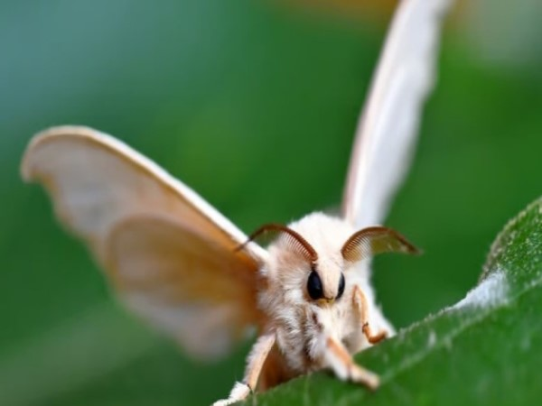
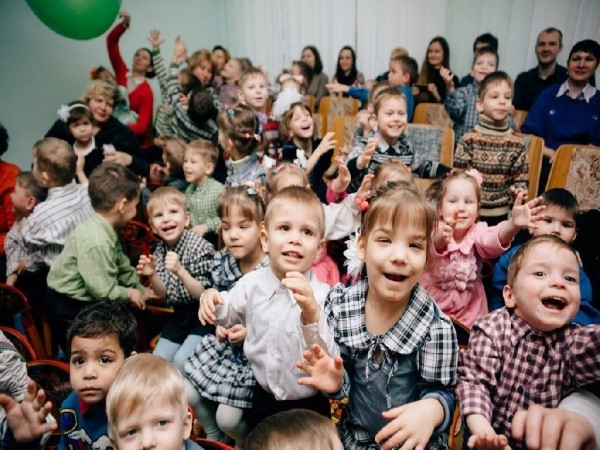
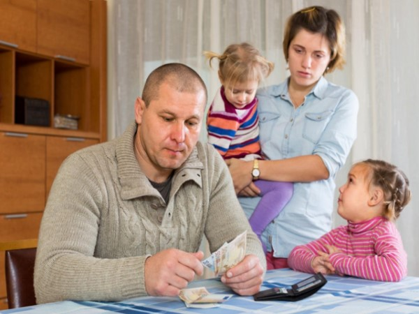
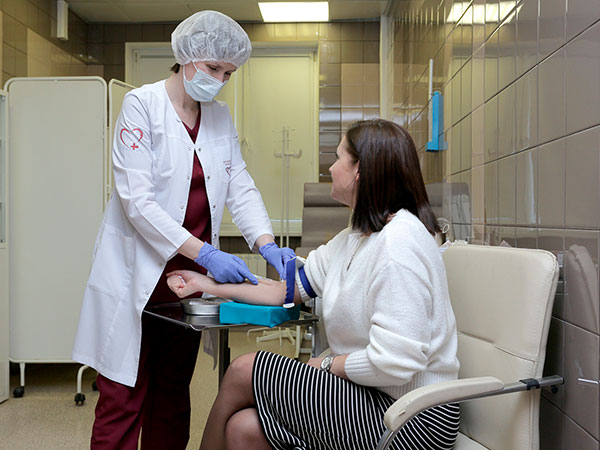
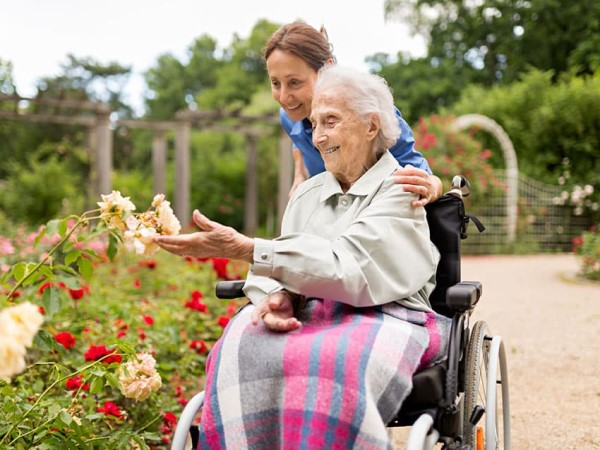
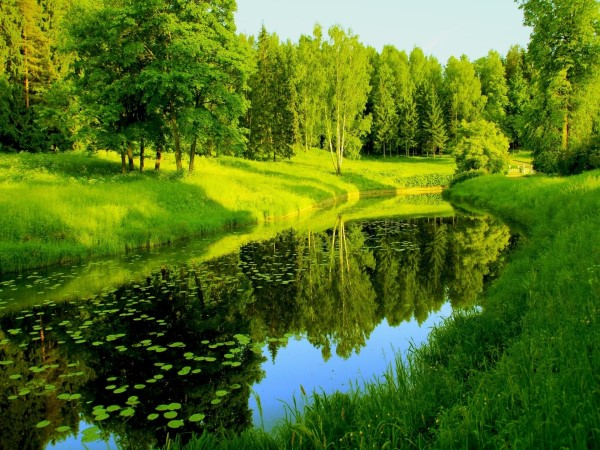

Поддержите жизнь мотыльков
Мотыльки играют важную роль в экосистеме, участвуя в опылении растений. Поддерживая их популяцию, мы способствуем сохранению природы и разнообразию флоры и фауны. а также они заставляют говорить людей мимими

Поддержка детских домов
Детские дома нуждаются в нашей помощи. Вы можете помочь обеспечить детям необходимое: одежду, питание и обучение, чтобы каждый ребенок имел шанс на счастливое будущее.

Помощь малоимущим семьям
Малоимущие семьи нуждаются в поддержке. Ваши пожертвования помогут им приобрести основные вещи и улучшить качество жизни, давая возможность детям учиться и развиваться.

Поддержка медицины
Здоровье — важнейшая ценность. Ваша помощь может пойти на приобретение медицинского оборудования, лекарств и оказание поддержки тем, кто в ней нуждается.

Помощь пожилым людям
Пожилые люди часто сталкиваются с одиночеством и нуждаются в поддержке. Ваши пожертвования помогут обеспечить их необходимыми услугами и создать комфортные условия для жизни.

Защита экологии
Забота об экологии — это забота о будущем планеты. Поддержите проекты по озеленению, очистке рек и сохранению природных ресурсов для будущих поколений.